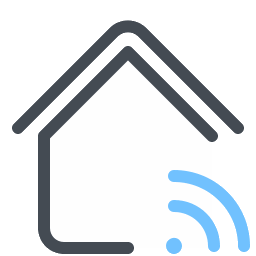

<mat-sidenav-container class="sidenav-container">
  <mat-sidenav *ngIf="auth.loggedIn" #drawer class="sidenav" fixedInViewport="true"
      [attr.role]="(isHandset$ | async) ? 'dialog' : 'navigation'"
      [mode]="(isHandset$ | async) ? 'over' : 'side'"
      [opened]="!(isHandset$ | async)">
      <a (click)="nameComponent='Accueil'" [routerLink]="'/home'" style="text-decoration: none;"><mat-toolbar>Kniot</mat-toolbar></a>
      
      <mat-nav-list>
        <mat-divider></mat-divider>
        <a mat-list-item (click)="nameComponent='Scénarios'" [routerLink]="'/scenario'" *ngIf="auth.loggedIn">
          <mat-icon style="margin-right: 5px">av_timer</mat-icon>
          Scénarios
        </a>
        <mat-divider></mat-divider>
        <a mat-list-item (click)="nameComponent='Parèmetres'" [routerLink]="'/setting'" *ngIf="auth.loggedIn">
          <mat-icon style="margin-right: 5px">settings</mat-icon>
          Paramètres
        </a>
        <mat-divider></mat-divider>
    </mat-nav-list>
  </mat-sidenav>
  <mat-sidenav-content>
    <mat-toolbar color="primary">
      <button *ngIf="auth.loggedIn"
        type="button"
        aria-label="Toggle sidenav"
        mat-icon-button
        (click)="sc.first.toggle()"
      >            
        <mat-icon>menu</mat-icon>
      </button>
      <div *ngIf="auth.loggedIn">
        {{ nameComponent }}
      </div>
      <div fxFlex></div>
      <div *ngIf="auth.loggedIn">
        <button mat-button [matMenuTriggerFor]="menu"><mat-icon aria-label="toggle icon">account_circle</mat-icon></button>
        <mat-menu #menu="matMenu">
          <button (click)="logout()"  mat-menu-item>Se deconnecter</button>
        </mat-menu>
      </div>
    </mat-toolbar>
    <ng-content>
    </ng-content>
  </mat-sidenav-content>
</mat-sidenav-container>
